contaminacion ambiental
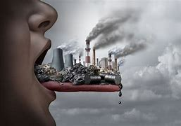
tipos de contaminacion
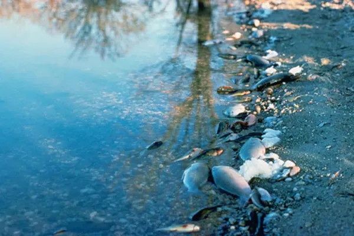
tips para reducir al contaminacion
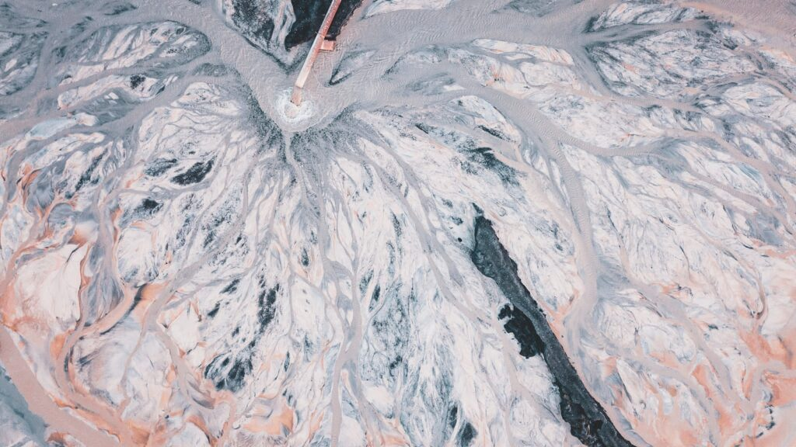
consecuancias que tiene la contaminacion ambiental en la gente
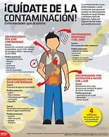
contaminacion de al tierra
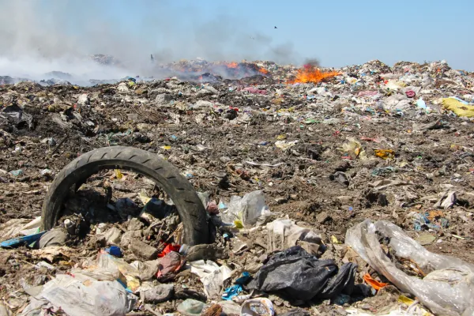
contaminacion del aire y las soluciones
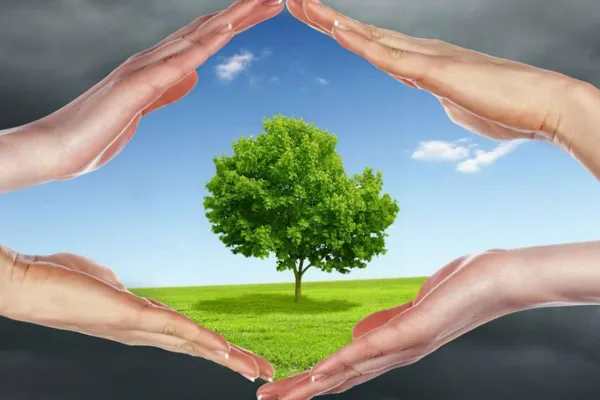
contaminacion del agua y sus cambios
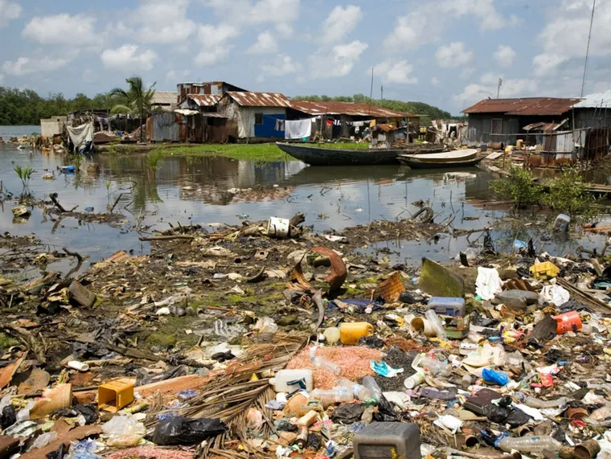
contaminacion atmosferica y que nos afecta
los mayores contaminadores
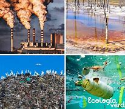
que planes de prebencion tenemos en nuestro pais
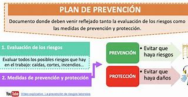
que pasara si no tenemos mas autocontrol de la contaminacion
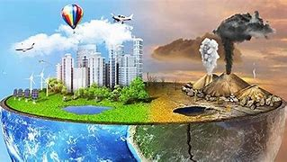
como reducirla contaminacion
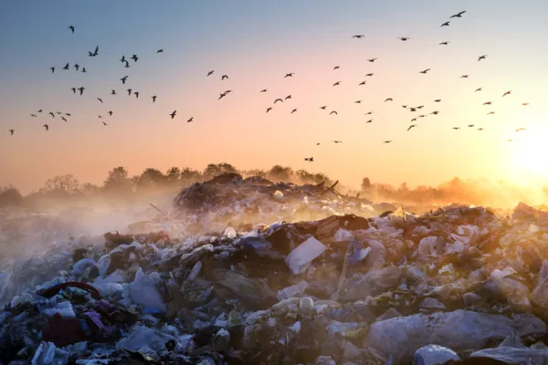
mayores lugares que tienen un alto grado de contaminacion
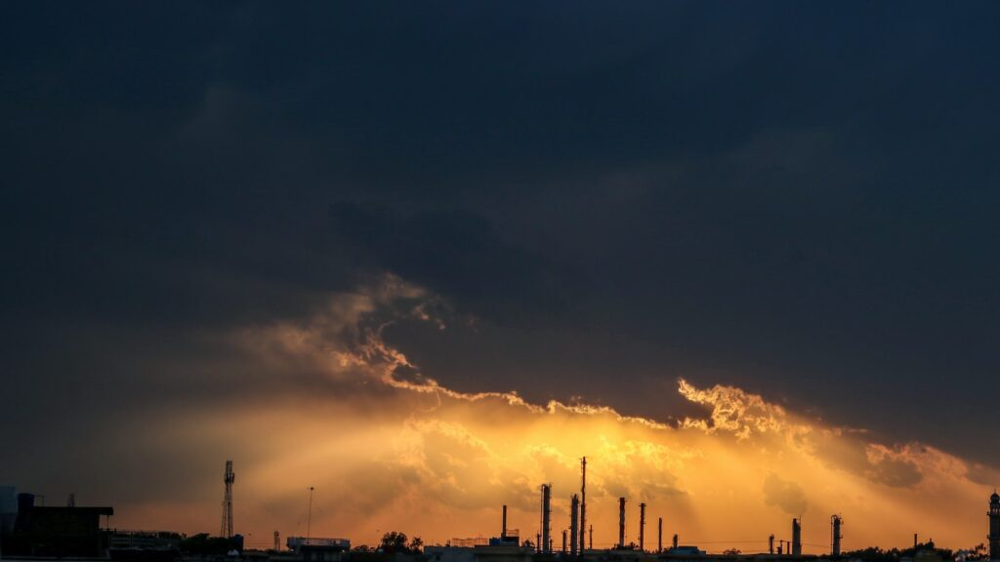
contaminacion y el hombre
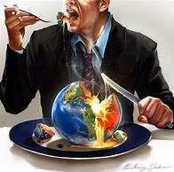
uso de fuentes 0 contaminantes
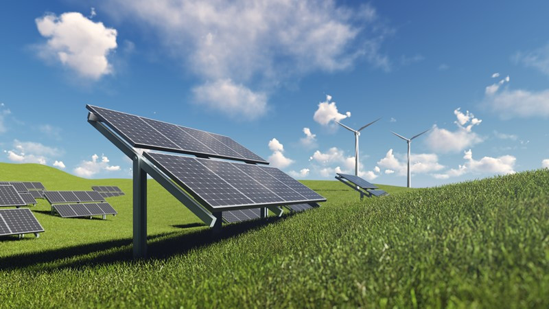
CONCLUCION
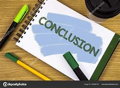
BIBLIOGRAFIA
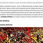
OPINION